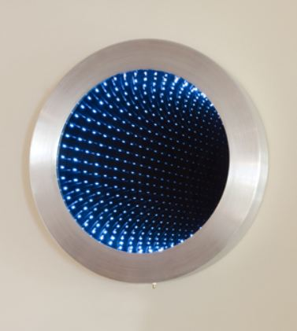
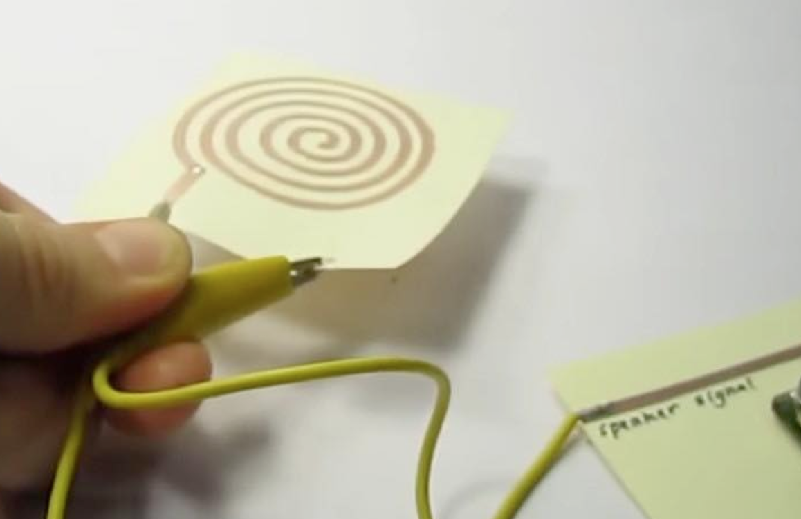
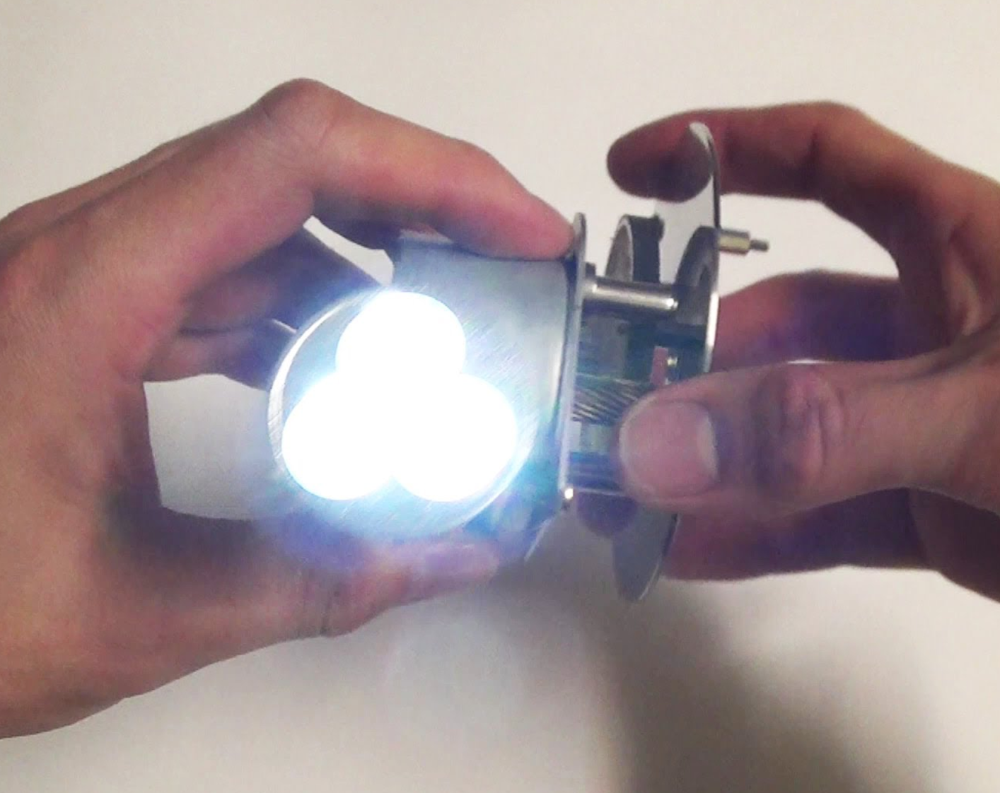
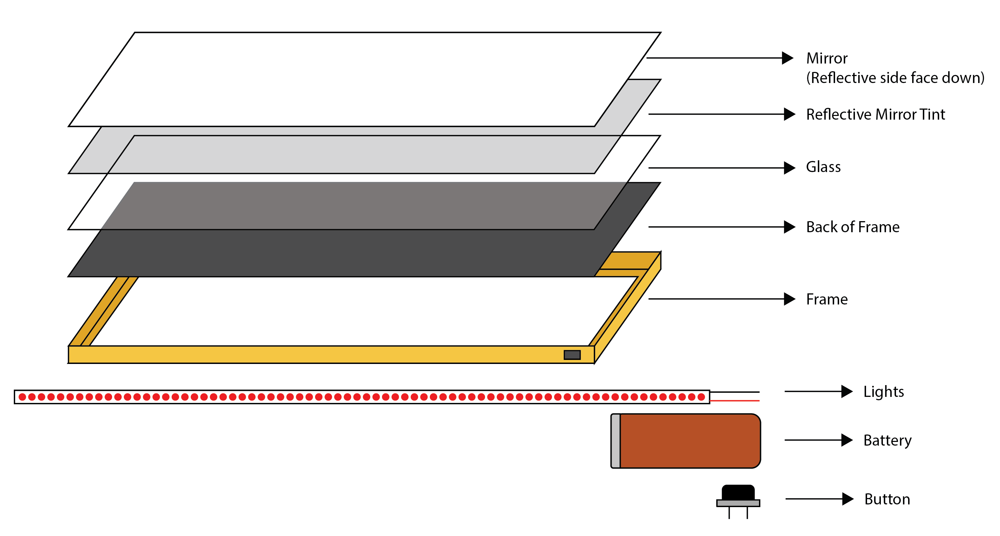
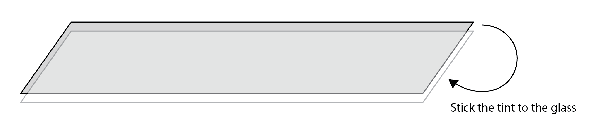
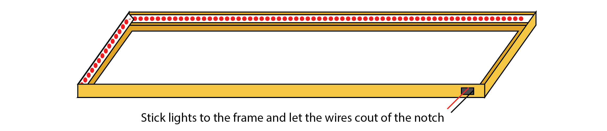
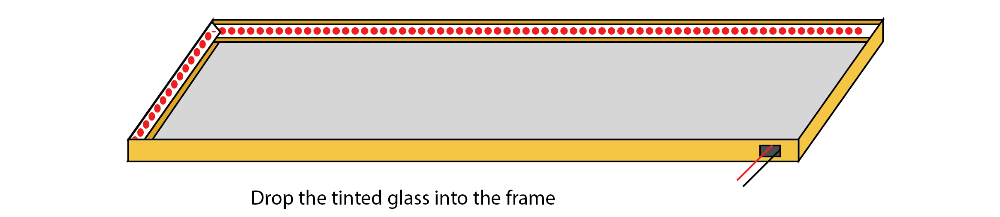
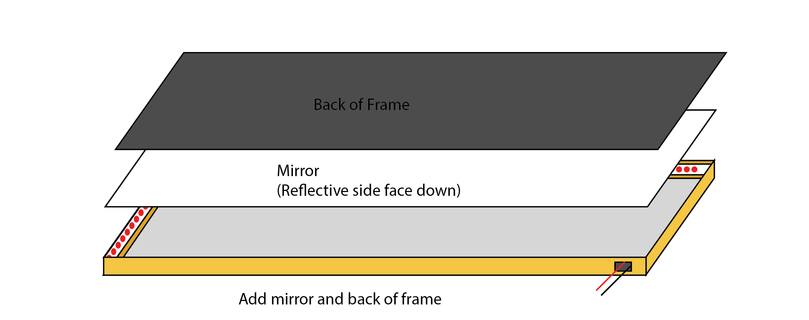
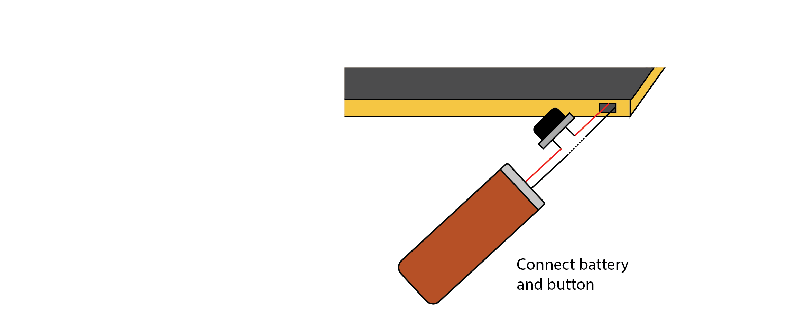

Curriculum Proposal
The Audience
The class usually consists of 5-8 girls of the age of 8-12. Each have different exposures and enjoy different parts of "making" (fabrication vs coding vs lights vs sound).
Commentary on current kits (such as Adafruit kits)
Pros of the current Kit
- The end result of the projects are extremely interactive
- Lot of the steps are pre-packaged and thus simplified
Cons of the current kits
- Too many hardware and software dependencies
- The steps in the manuals are verbose
- Each project takes more than 1 class to complete (each class being ~90 minutes long)
- It creates something that they cannot take home with them
- Because of the pre packaged steps, it is not possible for the students to dive deep into the material
Improving upon kits
I still think kits are a very effective way of learning. I would however like to add a few changes to it.
- The kits will help in making things that are relatable to a students everyday life
- The end product can be taken home by the student
- The instructions will be less verbose and more along the questioning nature. This is so that students question what and why they are doing something
- The cost "per kit" per person/group should be less than $5-10. (The reason for this being, I would like it if this idea has scalability)
- Each kit will contain a "teacher instructions set" and a a"student isntruction set". The teacher instruction set will contain caveats in the process as well as discussion prompts. The student instruction kit will contain only the steps on how to make the final piece
Ideas
Infinity wall mirror
A wall mirror that is lined with extra mirror film and lights so that it doubles as an infinity mirror!
DIY speaker box/ Cell phone pouch
A cell phone pouch that can also be used as a speaker. Made with just copper tape, magnets and some cardboard, this will be a chance for students to make custom speakers for their phones.
DIY rechargeable torch
An introduction to green energy and living off the grid. This project will result with each student having their own mechanical powered torch to use. The casing for the torch can take as creative a form as one wishes.
Infinity wall mirror - Teacher Instructions
Class Objective
To make an infinity mirror to dazzle up your room!
Time requirment
60 Min to prepare + 90 minutes to make
What this kit contains
- Mirror
- One-way Mirror screen
- Glass
- Frame
- Lights of course
- Battery
Discussions
How does a mirror work?
While unwrapping the kit, make a student stand in front of the mirror and talk about what the basic properties of a mirror are through small experiments. Make them walk away from the mirror. What do they see? (The iamge is as far as the object is from the mirror) Wave at the mirror. Which hand is waving (Lateral inversion)
How does a one-way mirror in an interogation room work?
In step 2, where we glue the mirror film to the glass, ask the student to place a torch on the side with the film and describe what they see. Ask another student to go behind the mirror and describe what they see. How interrogation room mirrors work
Now, how does the infinity mirror work?
After the last step, have a quick discussion on how the infinity mirror itself works.
Reference
- https://andrewcarr102.wordpress.com/2015/06/08/how-does-an-infinity-mirror-work/
- http://science.howstuffworks.com/question421.htm
Infinity wall mirror - Student Instructions
What are we making?
An infinity mirror to dazzle up your room!
What this kit contains
- Mirror
- One-way Mirror screen
- Glass
- Frame
- Lights
- Switch
- Battery
Let's get started !
- First, let's get all of the materials arranged in the below order. 
- Next, let's peel the protective layer off the mirror film slowly and stick it to the glass carefully 
- Stick the lights to the side of the inside of the frame and let the wires come out through the notch in the frame 
- keep the frame upside down and lay the tinted glass into the frame 
- Finally put the mirror with the reflective surface facing the lights and close the frame 
- Attach the lights to the switch and battery and turn it on! 